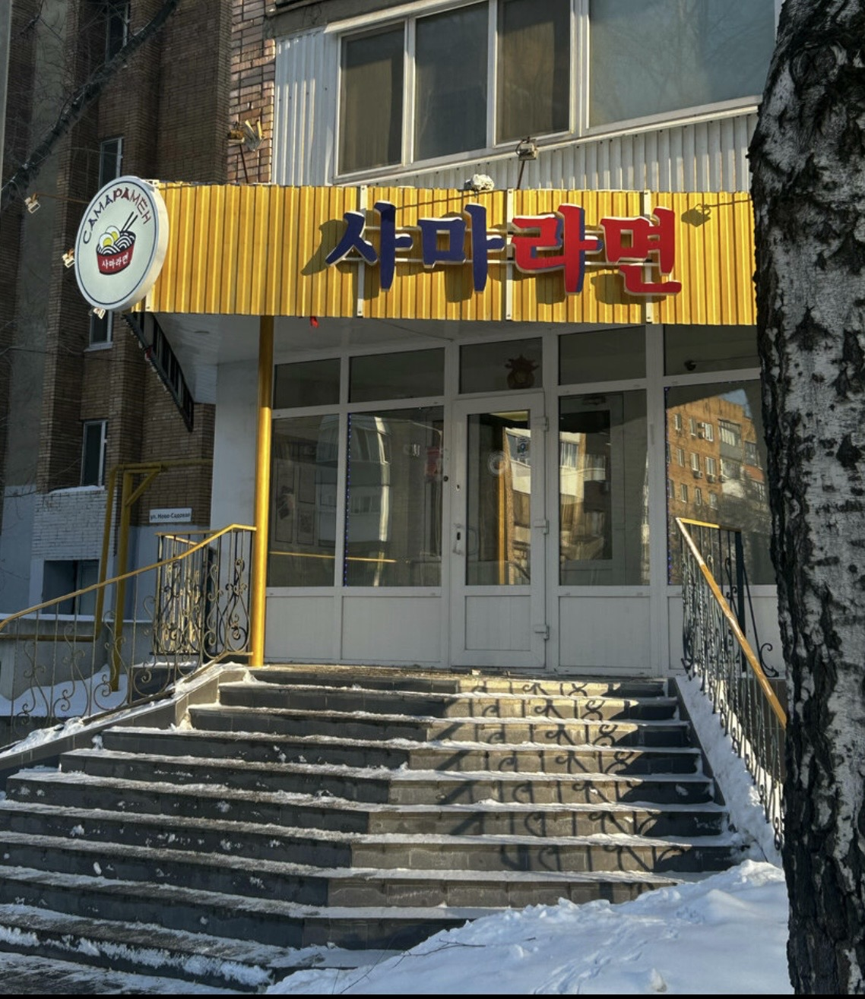

Продвижение и аналитика
Аудит продукта и аудитории, гипотезы, контент-стратегия, анализ результатов.
Иван Демин.
SMM-стратег / контент-продюсер
[[hero_desc]]
[[work_intro]]

Настоящая точка продаж[[sama_intro]]
[[sama_approach]]
Смотреть результаты ↓ответов с Instagram или TikTok среди тех, кто не выбрал вариант «Уже были у нас»
[[survey_summary]]
[[portfolio_description]]
[[blesk_intro]]
[[blesk_audience]] Статистика аудитории ↗
[[bot_intro]]
[[skills_intro]]
Аудит продукта и аудитории, гипотезы, контент-стратегия, анализ результатов.
Сценарии Reels, TikTok, Stories и каруселей, постановка задач монтажёру, контроль готовых материалов.
Привлечение внимания, объяснение ценности товаров и услуг, прогревы и обращения.
ChatGPT, Claude, Gemini, работа с визуалами, ботами и сбором данных.
[[contact_intro]]
Написать в Telegram